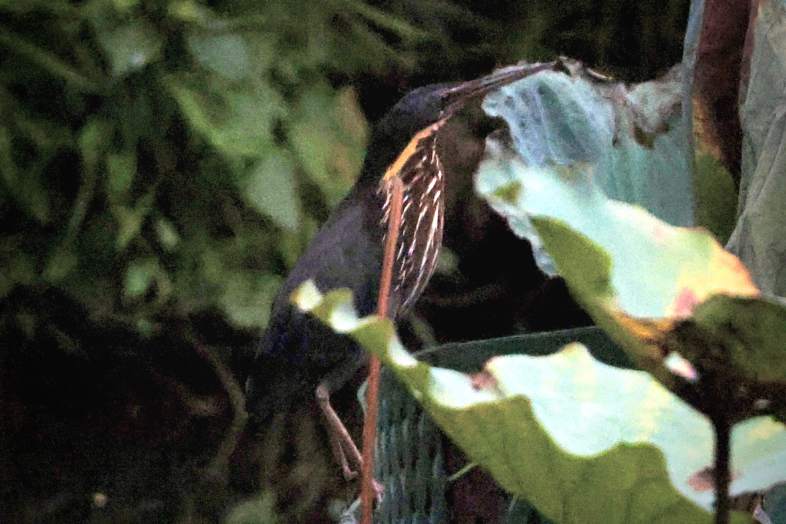
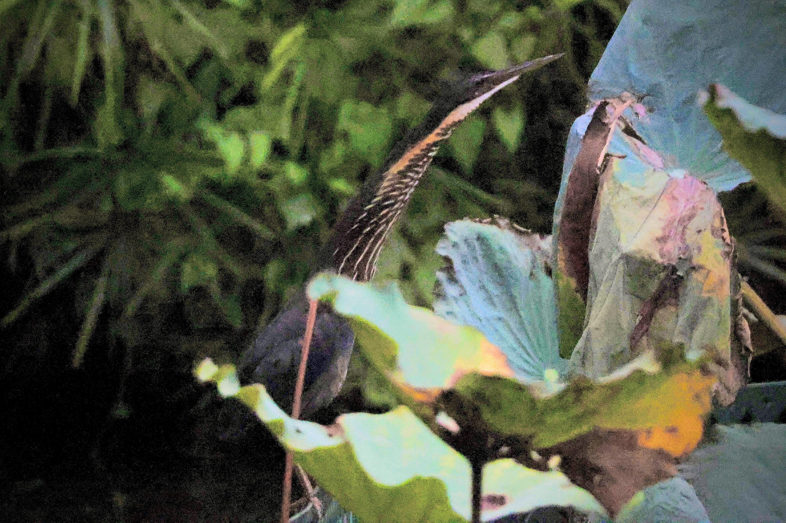
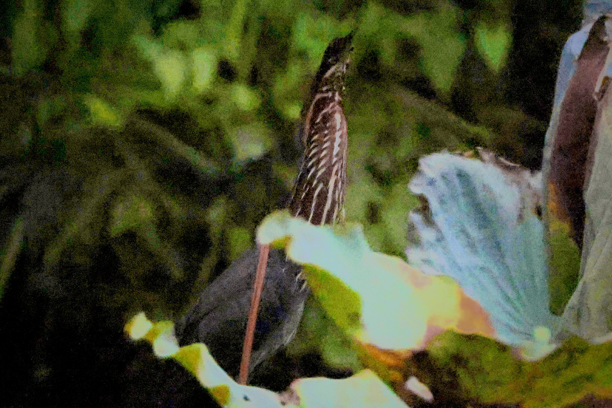

Black Bittern
Botaurus flavicollis
Order: Pelecaniformes
Family: Ardeidae

A dark heron. The name flavicollis means "yellow-necked", although the yellow realistically only refers to the two stripes on the sides. The throat is mostly chestnut brown with white lines on top.

The thing I love the most about bitterns- the neck! Unlike larger herons and egrets that the skin and feathers almost shrink-wrapped to their skeletons, bitterns' necks do not reflect the real thing underneath.

Herons also have their eyes facing forward and downward, not sideways!